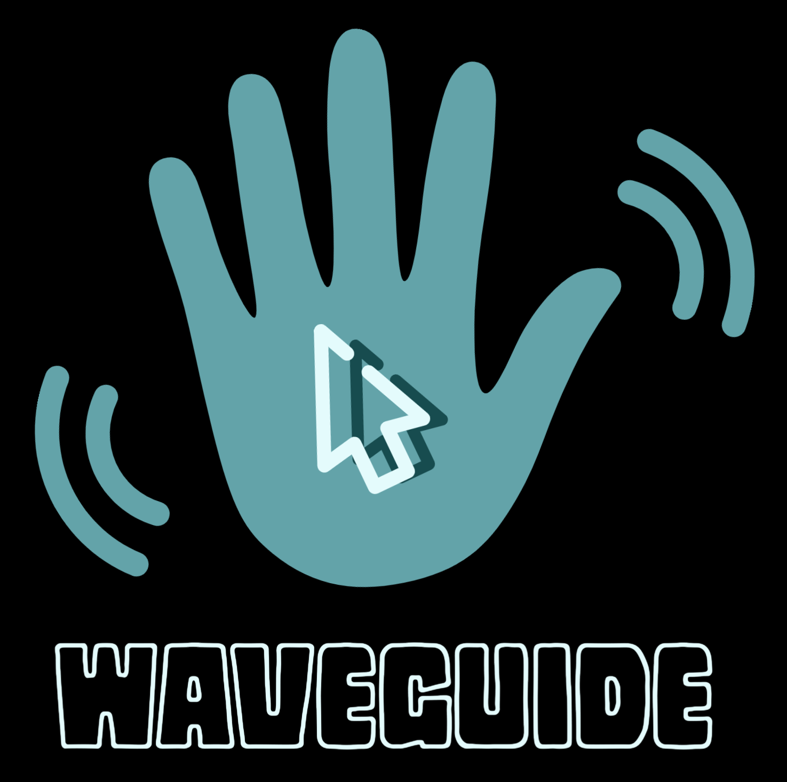

Home
WELCOME TO OUR PROJECT WAVEGUIDE

WaveGuide is a utility that allows you to control the cursor using hand gestures. It uses a Raspberry Pi camera module to capture your hand movements and translates them into cursor actions. You can perform various operations such as moving, clicking, dragging, scrolling and more with simple gestures. WaveGuide is developed by a team of four students from the University of Glasgow as a part of their ENG502X Real-time Embedded Programming project. It uses OpenCV for image processing and X11 for cursor manipulation. It runs on Raspberry Pi 4B with Raspbian OS (based on Debian Buster).